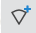
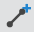
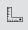
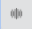

Project Toolbar¶
The Main Screen (see Main Screen) has three toolbars, located above the main screen, to the left and to the right
The menu at the top of the window has several features. It contains the top menu, project name and the version number. See Top Menu
Top Menu¶
When a new version is released the version number will update. Projects will automatically update as soon as they are opened in the new version. During the update the devices and links are greyed out until they have been re-calculated and the following message is shown.
Updating Your Project¶
- Use the icons to access the following functions:
- Select which features are displayed on the map, choose from Network Sites, Subscriber Sites, PTP Links, Network Devices, Mesh Links, PMP Links, Network Site Labels and Subscriber Site Labels - restrict items shown on the map to those containing the filter phrase
- Click to logout from the application.
Left and Right Toolbars¶
For the left toolbar, see Project Navigation.
Use the icons in the right toolbar to access the following functions, see Map for more details on each function :
- Zoom the map to fit the sites in the project file
- Select items from the map
- Add new network sites to the map
- Add new subscriber sites to the map
 - Add new PMP Network Devices to the map
 - Add new PTP links to the map
- Add new PMP links to the map
- Add viewsheds to the map
 - Use the ruler to measure distances on the map
- Scale PMP ND sector display
 - Lookup 6 GHz AFC spectrum availability (US/Canada Only)